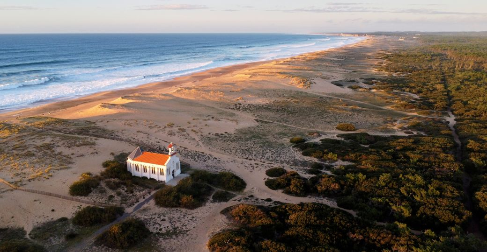
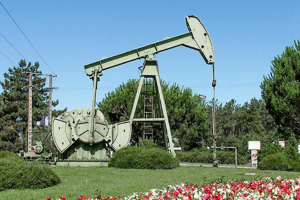
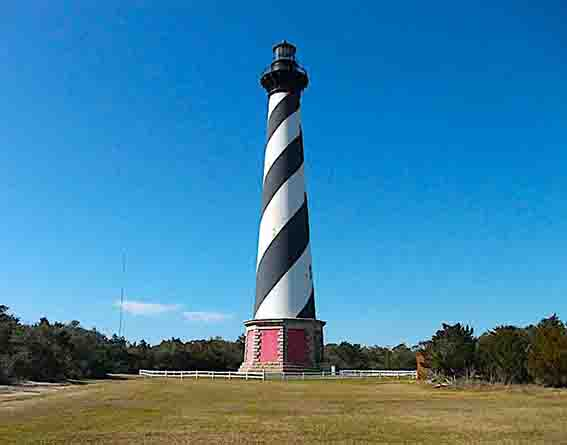
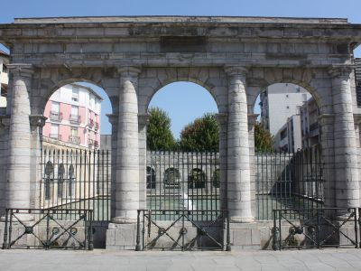

Labenne es una comuna litoral que está a unos 13 kms de Baiona, viven un poco más de 7000 personas (datos de 2021). Hay dos cosas que se pueden visitar en Labenne, la primera es la capilla de Santa Teresa (ver foto izquierda), que esta situada entre las dunas y que fue inagurada
en 1932 y la segunda son bunkers, semienterrados en la playa Central, que pertenecen al muro del Atlántico Sur, construidos por los nazis en 1942. Este tipo de bunkers,
también se pueden encontrar en Capbreton.
LABENNE
Labenne es una comuna litoral que está a unos 13 kms de Baiona, viven un poco más de 7000 personas (datos de 2021). Hay dos cosas que se pueden visitar en Labenne, la primera es la capilla de Santa Teresa (ver foto izquierda), que esta situada entre las dunas y que fue inagurada
en 1932 y la segunda son bunkers, semienterrados en la playa Central, que pertenecen al muro del Atlántico Sur, construidos por los nazis en 1942. Este tipo de bunkers,
también se pueden encontrar en Capbreton.
VER MÁS

Parentis-en-Born es conocida por ser la capital francesa de extración de petróleo. Es una comuna del interior, sin litoral marítimo, pero un largo litoral junto al lago.
En 2021 estaban censados unos 7000 habitantes y está situada a una hora de Mont-de-Marsan.
En 1954 se descubrió que había petróleo y se empezó su extracción. Actualmente, se extraen 21700 tn al año, siendo el 11 % de la extracción nacional y es hasta la
fecha el yacimiento más importante en territorio francés. Desde Gastes, al otro lado del lago, se pueden ver las bombas y los caminos que van a los campings y restaurantes
del lago de Parentis, las puedes ver de cerca, eso si, detrás de la valla.
PARENTIS-EN-BORN
Parentis-en-Born es conocida por ser la capital francesa de extración de petróleo. Es una comuna del interior, sin litoral marítimo, pero un largo litoral junto al lago.
En 2021 estaban censados unos 7000 habitantes y está situada a una hora de Mont-de-Marsan.
En 1954 se descubrió que había petróleo y se empezó su extracción. Actualmente, se extraen 21700 tn al año, siendo el 11 % de la extracción nacional y es hasta la
fecha el yacimiento más importante en territorio francés. Desde Gastes, al otro lado del lago, se pueden ver las bombas y los caminos que van a los campings y restaurantes
del lago de Parentis, las puedes ver de cerca, eso si, detrás de la valla.
VER MÁS

Contis-Plage pertenece a la comuna de St. Julien-en-Born y digamos, que es la playa de la comuna y esta a unos 7 kms del centro de St. Julien.
En ella podrás encontrar el famoso faro de Contis, que es el único que hay desde Biarritz hasta Cap-Ferret (cerca de Bordeaux).
Hay pocas casas y locales comparado con Biscarrose o con Mimizan, tiene su encanto
y, personalmente, yo prefiero esta playa por que al no tanta magnificación
CONTIS-PLAGE
Contis-Plage pertenece a la comuna de St. Julien-en-Born y digamos, que es la playa de la comuna y esta a unos 7 kms del centro de St. Julien.
En ella podrás encontrar el famoso faro de Contis, que es el único que hay desde Biarritz hasta Cap-Ferret (cerca de Bordeaux).
Hay pocas casas y locales comparado con Biscarrose o con Mimizan, tiene su encanto
y, personalmente, yo prefiero esta playa por que al no tanta magnificación
VER MÁS

La antigua Aquae Tarbellicae, de origen romano y conocida por su termalismo. Es de obligada visita a la Fontaine Chaude, que es monumento histórico. Situada en el centro de la
ciudad, símbolo de la hidroterapia, el agua que sale de sus caños suele estar a 64 grados. También se puede visitar su catedral, a pocos de metros de la Fontaine Chaude. En Dax podemos
encontrar el monumento del Legionario y su perro, nos podemos perder en su centro y pasear por los restos de su muralla galo-romana. Recomendable visitar el Pont-Vieux, donde
pasa el Adour.